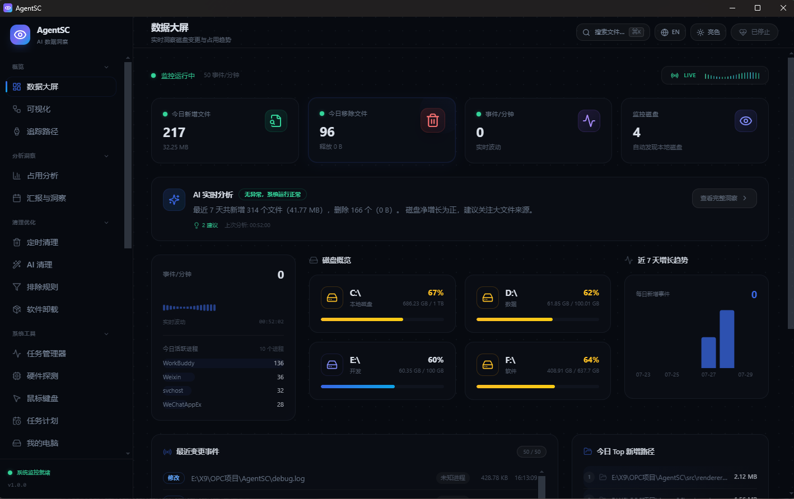
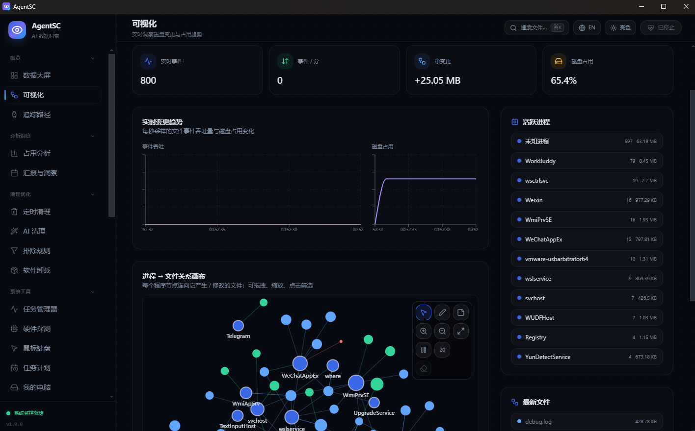
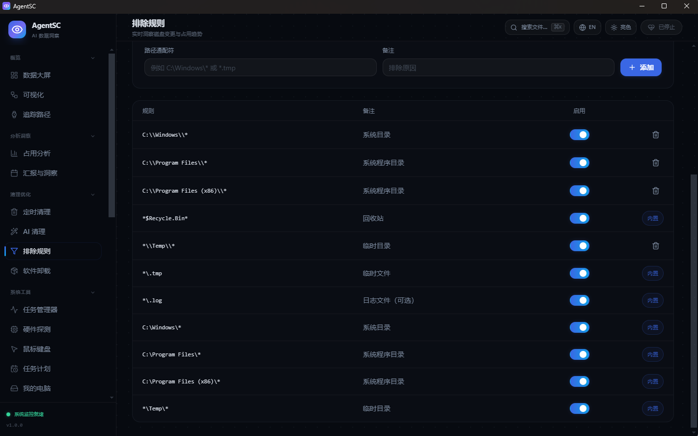

概览 · 分析洞察
以数据大屏实时掌握磁盘动态，用 AI 把海量变更翻译成可读的结论。
- 数据大屏：可视化磁盘活动与趋势
- 追踪路径：选定目录，逐文件审计
- 占用分析：定位空间黑洞
- AI 洞察：自然语言解读变更
AgentSC 是 AI 驱动的磁盘文件变更追踪软件——实时捕获、智能分析、主动清理，把系统里发生的一切尽收眼底。
从文件变更追踪到系统治理，从安全防御到开发提效——AgentSC 把零散的系统工具收拢成一套一致的体验。
以数据大屏实时掌握磁盘动态，用 AI 把海量变更翻译成可读的结论。
智能识别冗余，定时与 AI 双引擎协同，释放每一寸空间。
启动项、任务管理器、卸载、注册表、WSL、我的电脑——系统治理一站直达。
流量监控、抓包分析、证书与 IP 追踪，构筑本机网络防线。
CLI 管理、本地 Ollama 模型、局域网共享，把开发流也收进同一面板。
真实的界面，零修饰的截图——这就是 AgentSC 每天在你屏幕上呈现的样子。



勾选需要守护的目录——项目、下载、配置或整块磁盘，精细到子文件夹。
基于文件监听内核，毫秒级记录每一次创建、修改、移动与删除，全程本地落库。
AI 把事件流总结成洞察，定位冗余与风险，一键进入清理或安全处置流程。
不是又一个清理工具，而是一套以「可解释、可掌控」为核心的系统治理平台。
全部分析在本地完成，无云端依赖，敏感数据不出本机。
本地模型理解变更语义，从「看到事件」到「读懂意图」。
30+ 模块覆盖追踪、清理、安全与开发，无需在多软件间切换。
原生 Electron 架构，常驻资源占用低，老机器也跑得动。
| 能力 | AgentSC | 传统清理软件 | 手动管理 |
|---|---|---|---|
| 实时文件变更追踪 | ✓ 毫秒级 | ✗ | ✗ 靠肉眼 |
| AI 语义洞察 | ✓ 本地模型 | ✗ | ✗ |
| 网络抓包 / 安全 | ✓ 内置 | 部分 | ✗ |
| 隐私（零上传） | ✓ 100% | 常上报 | ✓ |
| 统一工作台 | ✓ 30+ 模块 | 单点 | 多工具 |
免费下载 AgentSC，让 AI 替你盯住每一次文件变动。Windows 10 / 11 原生支持。